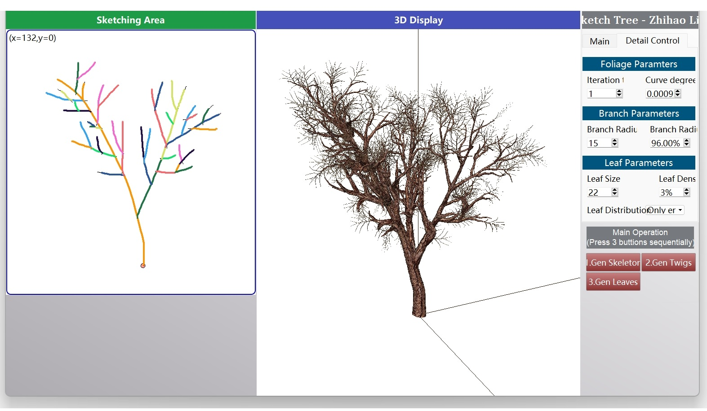

📋 Projects and Software

[NEWS] My code has also been used by several recent SIGGRAPH(ToG) papers !! Please check their Acknowledgement section, such as:
- TreePartNet: Neural Decomposition of Point Clouds for 3D
Tree Reconstruction.
- SIGGRAPH Asia 2021. [Project]
- SIGGRAPH Asia 2021. [Project]

➜ [GitHub and Software] [Demo Video]

➜ [Github and Software] [Demo Video]

➜ [Github and Software]
➜ [Demo Video]
➜ [Demo Video]
The followings are some representative software that I developed individually.